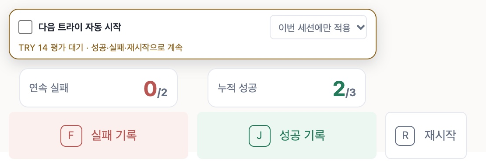
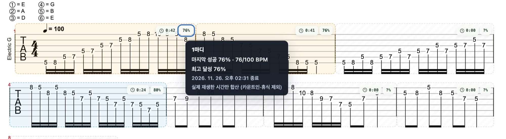
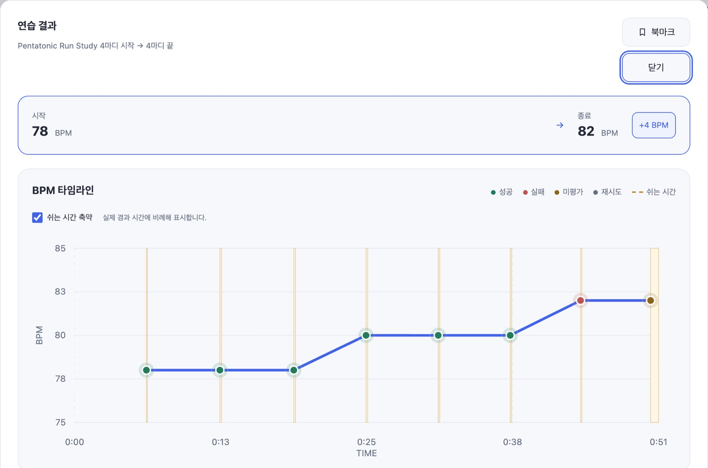
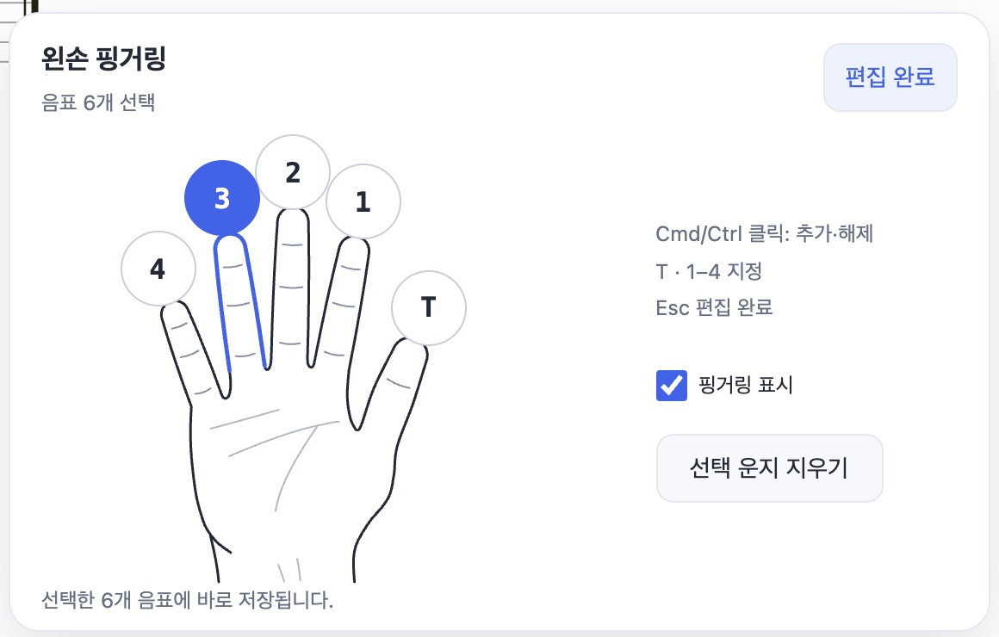
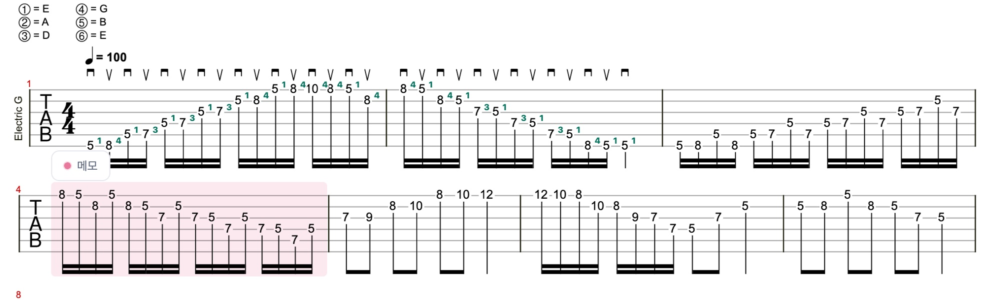
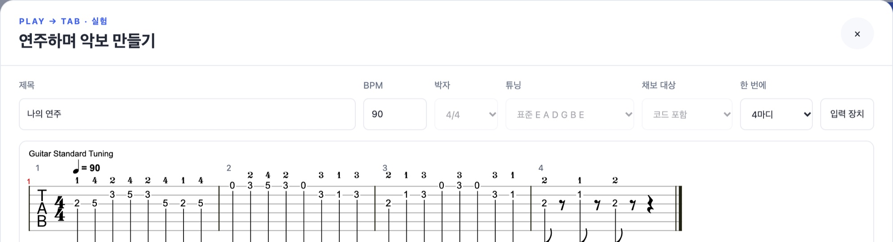
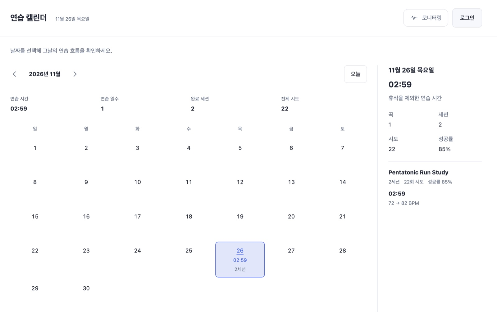

구간 반복
드래그로 구간을 잡고,
드래그로 구간을 잡고,
J 한 번이면 성공 기록
카운트인이 끝나면 반주가 흘러요. 성공은 J, 실패는 F. 세 번 성공하면 BPM이 2씩 올라가고, 두 번 연달아 실패하면 1 내려가요.



골라 보세요. 딱 맞는 기능으로 바로 안내해 드릴게요.
카운트인이 끝나면 반주가 흘러요. 성공은 J, 실패는 F. 세 번 성공하면 BPM이 2씩 올라가고, 두 번 연달아 실패하면 1 내려가요.

원곡 속도 대비 마지막으로 성공한 속도가 악보 위에 떠요. 틀린 자리엔 표시가 남고요.

성공과 실패가 점으로 찍히고, 쉬는 시간은 접어서 보여 줘요.

여러 음을 한꺼번에 고르고 T·1·2·3·4 키로 빠르게 적을 수 있어요.

구간만 잡으면 순서대로 기호가 붙어요. 원본 악보 파일은 건드리지 않아요.

겹치는 구간에도 따로 메모할 수 있고, 목록에서 누르면 그 자리로 바로 가요.

옆으로 넘겨 보세요.
오디오 인터페이스에 기타를 꽂아 보세요. 키보드만으로도 연습은 충분히 할 수 있어요.
가지고 있는 NAM 앰프 모델과 캐비닛 IR을 불러와 드라이브와 3밴드 EQ를 맞춰 보세요.
앰프 모델과 IR 파일은 앱에 들어 있지 않아요. 가진 파일을 이 기기에서만 써요.


메트로놈에 맞춰 네 마디를 치면 손가락 번호까지 붙은 악보가 나타나요. 마음에 드는 마디만 남기고 저장하세요.
실험 기능이라 악기와 연주 환경에 따라 결과가 달라질 수 있어요.

기타 소리를 악보와 맞춰 보다가 빠진 음을 찾으면 실패로 남기고, 같은 속도로 처음부터 다시 들어가요.


출시를 준비하고 있어요. 이 페이지에서 가장 먼저 알려 드릴게요.
아니요. 구간 반복, BPM 올리기, 기록, 악보 메모는 키보드만으로 다 돼요. 모니터링, 실시간 타브 대조, 연주하며 악보 만들기는 오디오 인터페이스로 기타를 연결해야 써요.
Guitar Pro(GP3·GP4·GP5·GPX·GP) 파일과 MusicXML 파일을 불러올 수 있어요. 여러 파트가 있으면 연습할 파트를 골라요.
네. 악보와 연습 기록, 녹음은 모두 이 Mac에 저장되고 인터넷 없이도 열려요. 백업 파일로 다른 기기에 옮길 수도 있어요.
처음에는 세 번 성공하면 2 BPM 오르고, 두 번 연달아 실패하면 1 BPM 내려가요. 횟수와 폭, 누적·연속 기준은 설정에서 바꿀 수 있어요.
설치된 앱은 그대로 쓸 수 있어요. 설치 안내와 알려진 제한, 자료 백업 방법은 0.1.4 릴리스 안내에서 확인해 주세요.
Guitar Trainer가 Mac App Store에 나오면 여기서 바로 알려 드릴게요.